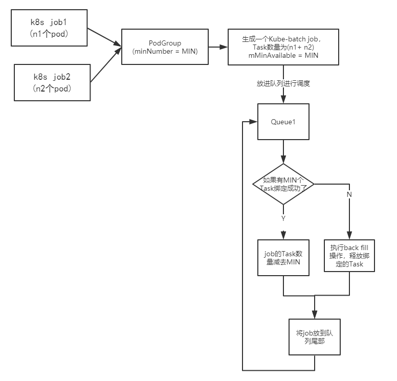

kube-batch如何实现gang-scheduler
gang scheduler介绍：一个job，可能有多个tasks,这些tasks要不全部执行，要不一个都不执行。
上面说到 kube-batch自定义了一个podGroup，调度时以podGroup为单位的。现在说一下调度podGroup的整个过程。
本文分为四个部分：
一：介绍kube-batch的基本概念
二：总结这些概念的关系，已经列出可能的疑问
三：介绍如何实现gang scheduler
四：总结gang scheduler的实现流程
第一二部分是为了帮助理解，第四部分是从代码角度深入理解。想大概了解的，看到第三部分就可以了。
一：介绍kube-batch的基本概念：queue, podgroup, job。
(1) queue 这个一个全局的概念，意思就是没有Namespace的这一说法。用这个概念的目的是为了实现多租户。这里一个租户就是一个队列。kube-batch默认有一个default-queue。如果用户创建的任务没有指定队列，都会放在默认的这个队列里。
type QueueInfo struct {
UID QueueID
Name string
Weight int32
Queue *arbcorev1.Queue
}
查看 queue 的定义，发现这里有个 Weight的属性。这个干什么用的呢？继续往下。
proportion.go：116
// Calculates the deserved of each Queue.
deserved := api.EmptyResource()
for _, attr := range pp.queueOpts {
glog.V(4).Infof("Considering Queue <%s>: weight <%d>, total weight <%d>.",
attr.name, attr.weight, totalWeight)
if _, found := meet[attr.queueID]; found {
continue
}
attr.deserved.Add(remaining.Clone().Multi(float64(attr.weight) / float64(totalWeight)))
if !attr.deserved.LessEqual(attr.request) {
attr.deserved = helpers.Min(attr.deserved, attr.request)
meet[attr.queueID] = struct{}{}
}
pp.updateShare(attr)
glog.V(4).Infof("The attributes of queue <%s> in proportion: deserved <%v>, allocate <%v>, request <%v>, share <%0.2f>",
attr.name, attr.deserved, attr.allocated, attr.request, attr.share)
deserved.Add(attr.deserved)
}
可以看出来，”Weight” 是分配资源用的。一个Queue代表一个租户，它们按照权重分配集群的资源。下面这个图清晰明了：
（2）job 这里很容易弄混，kube-batch的job 和 k8s的job是不一样的。
type JobInfo struct {
UID JobID
Name string
Namespace string
Queue QueueID
Priority int32
NodeSelector map[string]string
MinAvailable int32
NodesFitDelta NodeResourceMap
// All tasks of the Job.
TaskStatusIndex map[TaskStatus]tasksMap
Tasks tasksMap
Allocated *Resource
TotalRequest *Resource
CreationTimestamp metav1.Time
PodGroup *v1alpha1.PodGroup
// TODO(k82cn): keep backward compatibility, removed it when v1alpha1 finalized.
PDB *policyv1.PodDisruptionBudget
}
这是kube-batch 中job的定义，这里要理解成: kube-batch job是一堆Task的集合(1个Task是一个pod)。
这里的job和K8s中job的区别是：
如果有一个k8s的job, 假设为Job1，有2个pod, 他指定的podgroup是gp1.
同时还有一个k8s的job, 假设为Job2，有2个pod, 他指定的podgroup也是gp1.
如果同时提交这俩个k8s job。那么在kube-batch看来，当前要调度的只有一个”job”(这是kube-batch的一个作
业)。这个kube-batch job总共有4个Tasks(pod)需要绑定。
所以，kube-batch的job,它是指向某个podgroup 所有的k8s job的pod集合。有点拗口，结合上面例子再读读。
(3) podgroup
我原本以为一个podgroup对应的是一个k8s job。后面我发现：
a. 我运行一个job不指定podgroup也能正常运行。
b. 我同时运行俩个job,指定的是同一个podgroup也能正常运行。
所以，我就非常奇怪，看了相关源码后发现，这里的podgroup是一个pod的集合。
如果有n个k8s job指向他，那么他就是这个n个Job的所有pod的集合。
二：总结这些概念的关系
（1）提交每个k8s job都必须指定一个podgroup
Q: 为什么创建job时，不指定也能运行？
A: kube-batch会为这类job,创建一个 shadow PodGroup
（2）一个podGroup对应一个queue
Q:为什么创建queue时，不指定也能运行
A:不指定，默认使用default-queue
（3）一个kube-batch中的job 包含podgroup中所有的pod.
（4）这个kube-batch的job使用 queue中的资源，完成task
三：介绍如何实现gang scheduler
结合图片和文字一起看，能加深理解 
这里以俩个k8s job为例介绍这个过程
（1）将指向某个podgroup的 所有k8s job中的pod合在一起生成一个 kube-batch job. （比如上面图中，最后kube-batch job的Tasks是 n1+n2）
(2) 开始调度kube-batch中的job
(3) 每次完成一个task（这里是假装绑定一个pod）,当完成的task数量 达到MIN（podgroup设定的值）时，开始真正的绑定，一次性绑定MIN个task。然后将剩下的Tasks 生成一个新的kube-batch job 再次调度。如果在没达到MIN 个之前，已经资源不足，那么进入backfill 操作，释放之前绑定的job。
所以实现gang scheduler的关键还是 podgroup，通过设置podgroup的minNumber。达到每次调度要么 执行minNumber个tasks.要么一个都不执行。
PS： 上面的图片是为了解释, 所以放了俩个k8s job. 如果想让这俩个job进行gang scheduer, 直接令 minNumber = n1+n2. 这样俩个job就会同时执行。
四：总结gang scheduler的实现流程
我一开始非常纳闷为什么podgroup不是和k8s job一一对应。后面我仔细想想，发现这样设计，更加灵活。 如果是k8s job和podgroup一一对应的话。那么podgroup包含的就是这个k8s job的所有pod.这样每次就只能对一个k8s job进行gang scheduler.
而他这样设计，则同时进行一个或者多个K8s job的调度。（通过调整n1,n2以及minNumber的值）
注意： 这样也可能产生不好的影响。
例如我有两个K8s job.描述如下：
job1 需要6个pod，1个pod需要1个cpu
job2 需要6个pod，1个pod需要100个cpu
现在集群总共有6个cpu.
如果我不小心，将job1,job2的podgroup设置成一样。那么这次就会出现死锁，这俩个job都不会执行。
原因：
此时只有一个kube-batch的job,并且Tasks队列很有可能为：
job1-pod1, job2-pod1,job1-pod1……
这样当创建到job2-pod1, 这个任务时，已经资源不足了。然后释放资源，重新再来。这样就会一直死循环。
所以，要灵活使用Podgroup.